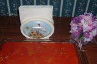

Turkey Casserole

Turkey Casserole
Ground turkey, potatoes and cream-style corn make this a delicious and hearty casserole. It's very, very good and my family just chows it down. No leftovers here!!
Ingredients
- 1 1/2 pounds ground turkey
- 4 potatoes, peeled and sliced
- 2 tablespoons butter
- salt and pepper to taste
- 1 (15 ounce) can cream-style corn
- 1 (10.75 ounce) can condensed tomato soup
Directions
- Preheat oven to 350 degrees F (175 degrees C).
- In a large skillet over medium-high heat, place the turkey and saute for 5 to 10 minutes, or until browned.
- Place the sliced potatoes in the bottom of a lightly greased 2-quart casserole dish, cover with butter and season with salt and pepper to taste. Then layer the cream-style corn over the potatoes, top with the browned turkey meat, and then top with the tomato soup.
- Cover and bake at 350 degrees F (175 degrees C) for 60 minutes.
All instructions for this recipe were sourced from this page, by Patty Kelleher.